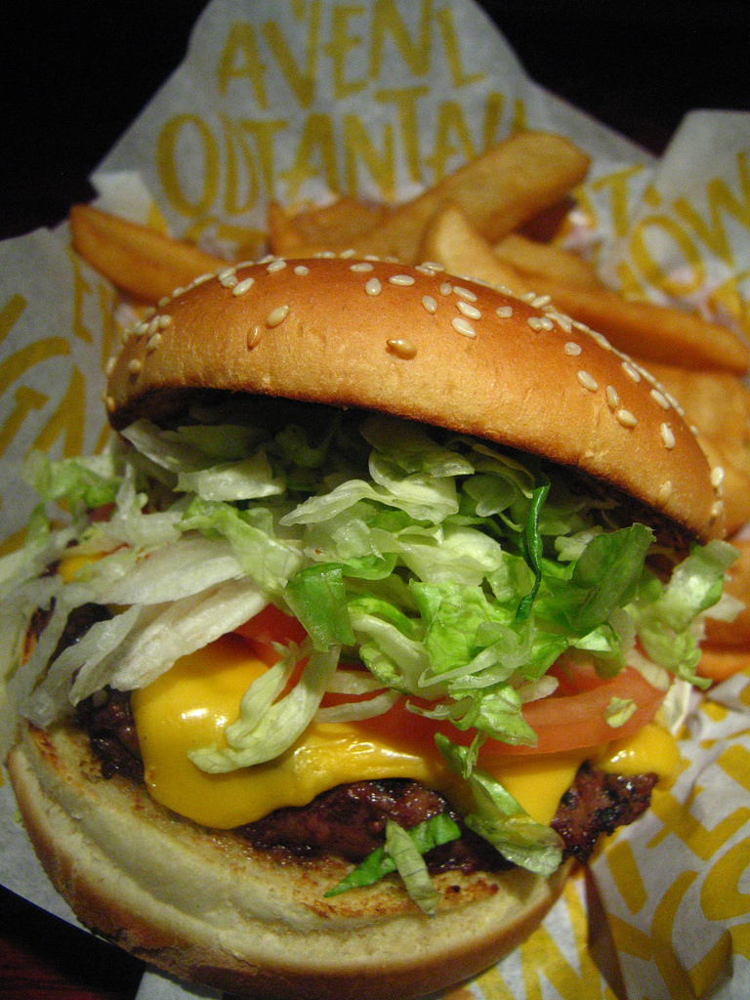

Popular Recipes This Week
Perfect recipe for a night when you don't have a lot of time. Grill on skewers or serve over rice.
Honey Garlic Butter Shrimp and PineappleLooking for a food to serve at the Superbowl? Look no further. These potato skins are delicious, easy, and a win for the whole family.
Buffalo Chicken Potato SkinsIf you're on a diet and looking for a taste of Thai, this recipe is perfect for you. Not only is it simple, but it's absolutely flavorful as well.
Chicken Satay with Peanut SauceIn the mood for something rich and sweet? Molten lava cake is always the answer. Serve warm with chocolate sauce or even with ice cream.
Molten Lava Chocolate Cake
foodlover41:
What my husband and I had for dinner tonight! We had so much fun making these together (and eating them)! Hopefully we will get to visit France soon!

happ:)Momma:
We went out to Red Robin as a family! This is what my son, Adam, ate. He is growing so tall! I swear he eats more and more everyday. #allgrownup
Related Articles
Food Network's 10 best strategies on healthy eating tips-- and how to make healthy eating a lifestyle.
10 Healthy Eating StrategiesIf you're looking for new utensils to buy to spice up your kitchen life, here are the top 5 recommended ones.
Top 5 Kitchen Utensils for Any CookGetting children to eat healthy can be a massive challenge. However, it doesn't have to be. With these 10 ideas, your kids will be healthier than ever.
10 Ways to get Kids to Eat Healthy FoodsIf you've ever wondered about how you can improve your mental capacity, you're not alone. By eating these recommended brain foods, you will be using your mind like never before.
Eat Smart for a Healthier Brain